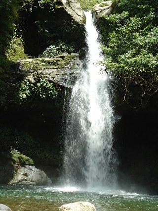
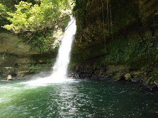
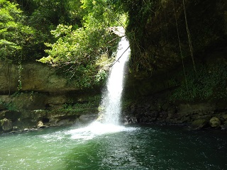
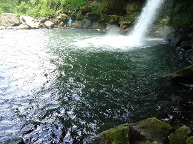
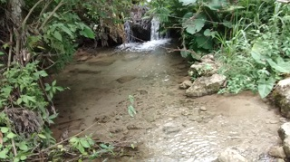

Caida natural de agua, rodeada de abundante vegetación y formaciones rocosas.
Al lugar frecuentan principalmente personas de la region, pero no se descarta la llegada de personas tanto nacionales como extranjeras.
El cause del afluente consta de 2 caidas de agua, la primera tiene alrededor de 10 metros, y la poza principal una profundidad de aproximadamente 3 metros; la segunda tiene una caida de 20 a 25 metros de altura y la poza alrededor de 4 metros.
Se ubica en el municipio de Tapilula, Chiapas, a 10 minutos de la cabecera municipal.
Cuenta con un tramo carrtero estatal, el tramo esta construido entre terraceria, empedrado y partes con concreto hidraulico y emcarpetamiento.
Se toma el tramo por la parte trasera del panteon municipal. Se puede tomar como punto de referencia el auditorio municipal, al llegar a este punto se vera como calle unica y se sigue el tramo, se pasaran 2 puentes antes de llegar, en vehiculo se hace en alrededor de 10 minutos y caminando en 25.
En el lugar usted puede practicar actividades como:





posicione el mouse o de click sobre las imágenes
{kind=link}
{kind=link}
{kind=link}
{kind=link}